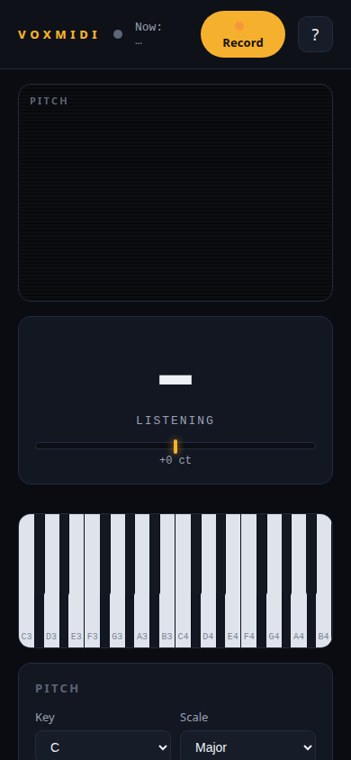
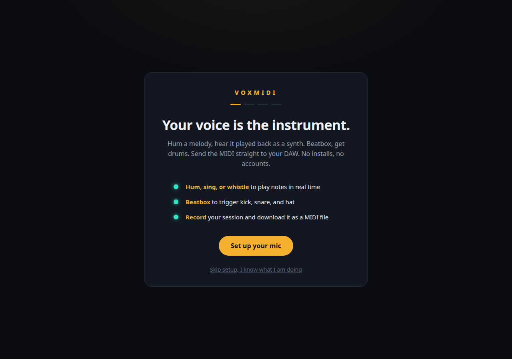

Not slop. Not yet designed.
VOXMIDI works. Every control does what it says. What it lacks is a design idea: the interface fights the performance moment it exists to serve. This review judges it against the design guide, in order: research, thesis, evaluation. Findings only. No code changed.
Four instruments, one lesson
Studied before judging. Each reference earns its place by teaching something VOXMIDI currently ignores.

Opens on Play, the performance view. Setup lives in other tabs. Teaches: performance and configuration are different rooms.

Power on and it is playable. No menu diving; visual semiotics over words. Teaches: the instrument is the interface.

Head down, do not look at your monitor. A performance surface must work at a glance, in peripheral vision.

One question: am I on the note. Pitch feedback is one thing, shown large and fast.
Reference images: product press and review sources
The common thread: every one of them separates performance from configuration. The performer looks at one thing. VOXMIDI shows seven at once.
The voice is the instrument. The screen is the mirror.
VOXMIDI is played with the mouth and watched with the eyes. Mid-performance, the singer needs exactly one answer: what note am I on, and am I in the key. Everything else is setup or capture, and neither belongs on the performance surface.
PLAY · the home
One feedback surface. The note named large, the trace drawn against the note lanes of the chosen key and scale. The keyboard lights the key you are singing. One primary action: Record. Panic stays, quiet, because a stuck note is a performance emergency.
SETUP · visited once
Key, scale, mic, sensitivity, pad training. Dubler 2 puts Play first and settings in tabs; the OP-1 puts the synth first and settings on other screens. Same move.
CAPTURE · a drawer
The session list and MIDI download appear after a recording exists. An empty box waiting for content is not a feature.
The studio, annotated
The live studio screen, captured headless at 1280px on 2026-10-12. Every numbered marker is a finding from the evaluation.
 1
2
3
4
5
6
7
8
9
1
2
3
4
5
6
7
8
9
- The trace is the hero. Here it reads thin and clinical, boxed like everything else.
- The best element in the app, trapped in a card identical to all seven others.
- Should echo the voice by lighting the key being sung. It does not.
- Setup work on the performance screen: key, scale, sensitivity, mic.
- Half dead space. Pad training is setup work, not performance.
- Mic picker and MIDI notes are not the performance surface.
- “Now: ...” is a placeholder where the live note should be.
- One of seven pill buttons. Nine radius values. No button system.
- “SESSION 0 notes”: empty chrome shown for an empty state.
Originality: no idea under the theme. Hierarchy: flat, the central failure against the thesis. Typography: the default pro-audio costume. Subtraction: the weakest area. Honesty: passes; everything works. The redesign is a design problem, not a honesty problem.
390px holds up, barely
Stacks without breakage, which is to its credit. The findings are about touch and priority, not layout bugs.

1 2 3- The trace names no note and draws no lanes.
- 15 keys at about 26px each. Not tappable.
- Settings stack below the fold with no end.
Keep this
- Microcopy worth keeping. “Panic kills all sound instantly if a note sticks.” “Locked on. Nice.” Plain, human, specific.
- The privacy footer. “Audio never leaves your device.” A real differentiator, well placed.
- Four-step onboarding, every step skippable, with satisfying lock-on feedback on the hum test.
- The help modal is real documentation, not filler.
- The note readout is the seed of the thesis. Big, instant, the one thing that already behaves like a mirror.

In thesis order
P0 · thesis level- Split the studio into Play and Setup. Play shows the merged feedback surface, the live keyboard, Record, and a quiet Panic. Everything else moves.
- Merge the note readout and the trace into one feedback instrument. The trace drawn against the note lanes of the selected key and scale, the current note named large at the trace head. This is the mirror. The separate G4 card disappears into it.
- One button language, two radii maximum. Record keeps the primary treatment. Everything else shares one quieter style.
- Capture becomes a drawer. Session list and Download MIDI appear only after a recording exists.
- The keyboard becomes the visual echo of the voice. Highlight the key being sung. On mobile, fold octaves; 15 keys at 26px is not tappable.
- Drum pads stay on Play as playable pads. Training them is Setup work and moves there with the wizard.
- Typography: one display face for the note, one quiet face for labels. Retire the letterspaced-caps default.
- One name for input gain. Onboarding says “raise the input gain”; the studio control says “Sensitivity”.
- Real-mic validation. Trace legibility while actually singing, and the populated session list. Headless cannot do this.